Percurso Profissional
Clique nos botões para conhecer o meu Percurso

Tiago Duarte Costa
Um pequeno resumo das experências que moldaram a minha carreira até aqui.
Clique nos botões para conhecer o meu Percurso
Pequena empresa familiar de comércio de produtos para construção civil e indústria, na qual desempenho funções de atendimento personalizado. É um período de grande desenvolvimento pessoal, no qual desenvolvo competências sociais e técnicas numa grande variedade de áreas.
É também um período em que exploro áreas tão diversas como:
Restauro Automóvel
Restauro e venda de Consolas de Jogos
Informática
Período de Grande Realização e Sucesso no qual descubro a minha vocação.
Explorando o gosto pela comunicação audiovisual, assumo a Gestão de Leads do canal Online, tornando-me especialista em vender automóveis tanto presencialmente como à distância.
Vendedor Revelação de 2019
Melhor Vendedor Nacional Toyota em 2020
No ínicio de 2021 despeço-me da Toyota para um período de reflexão em que viajo e planeio o meu futuro.
Em 2023 ingresso na Universidade de Aveiro no curso de Multimédia e Tecnologias de Comunicação, onde evoluo as minhas competências em Multimédia, explorando em especial Storytelling, Direção Criativa e Comunicação Audiovisual.
Descubro o gosto pela representação, atuando em várias curtas e fazendo trabalhos de publicidade.
Desenvolvo projetos de fotografia e vídeo, explorando a minha visão criativa e narrativa.
Produzo e Apresento um Documentário em que Entrevisto algumas das maiores personalidades em Portugal.